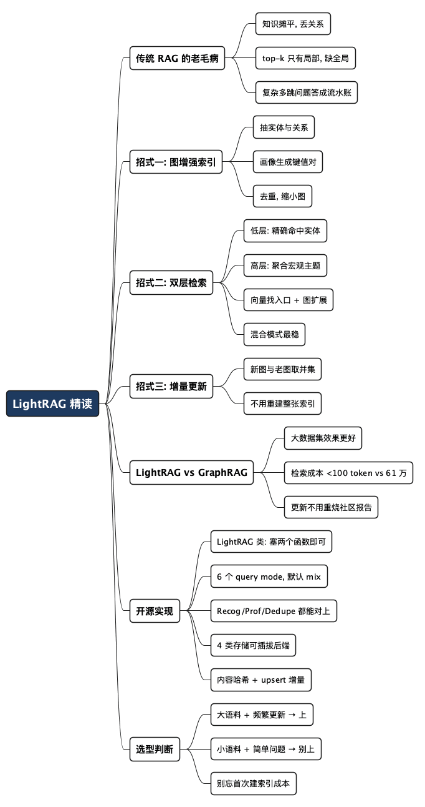

LightRAG 精读：既然有了 GraphRAG，为什么还要"轻"一下
Posted on 日 19 7月 2026 in AI
| Abstract | LightRAG 精读：既然有了 GraphRAG，为什么还要"轻"一下 |
|---|---|
| Authors | Walter Fan |
| Category | learning note |
| Version | v1.0 |
| Updated | 2026-07-19 |
| License | CC-BY-NC-ND 4.0 |
LightRAG 精读：既然有了 GraphRAG，为什么还要"轻"一下
先讲个真实场景。你给客服机器人喂了一整套公司文档，用户问："电动车普及会怎么影响城市空气质量和公共交通规划？" 传统 RAG 老老实实检索，翻出三段文字：一段讲电动车、一段讲空气污染、一段讲公交难题——然后拼在一起丢给大模型。结果就是一份"三段式流水账"：每段单独看都对，合起来却没回答用户真正想问的东西——这三件事到底怎么互相牵连？
这正是论文 LightRAG: Simple and Fast Retrieval-Augmented Generation（arXiv:2410.05779，港大 + 北邮，2024）开篇举的例子。它的判断很直接：传统 RAG 之所以答得碎，是因为它把知识摊平了（flat data representation），实体之间的关系在切 chunk 的那一刻就丢了。
那用知识图谱补上关系不就行了？——这正是 GraphRAG 做的事（我之前写过一篇《从 RAG 到 GraphRAG》详细拆过）。但 GraphRAG 有个让人肉疼的毛病：又慢又贵，而且加一点新数据就得几乎重建。LightRAG 想说的就是一句话：
图结构该上，但没必要上得那么重。检索可以又准、又快、又便宜，还能增量更新。
这篇文章我把它拆成三段来读：传统 RAG 到底卡在哪（第一节）、LightRAG 怎么用"图 + 双层检索 + 增量更新"绕过去（第二、三节）、以及它跟 GraphRAG 到底谁更值（第四节）。
术语先垫一句：RAG（Retrieval-Augmented Generation，检索增强生成）就是"先去外部知识库里查资料，再让大模型基于查到的资料回答"，好处是让模型不靠死记硬背、能引用最新和私有的知识。chunk 指把长文档切成的小段。知识图谱就是把"实体"（人、事、物）当节点、"关系"当连线画成的一张网。下面会反复用到。
一、传统 RAG 的老毛病：把知识摊平了
传统 RAG（论文里叫 NaiveRAG）的流程很朴素：
文档 → 切成 chunk → 每个 chunk 算向量 → 存进向量库
用户提问 → 问题算向量 → 找最相似的 top-k 个 chunk → 拼上下文 → 大模型生成
这套方案便宜、直接、好实现，在"问答直接命中某一段"的场景下够用。但只要问题稍微"绕"一点，它的两个根本缺陷就暴露了。论文把它们总结得很干脆：
缺陷一：只会摊平，抓不住关系。 chunk 之间是彼此独立的向量，谁也不知道谁。用户问的问题一旦要跨越好几个 chunk、还要理清它们之间的因果，向量相似度这把尺子就量不出来了。开头那个电动车的例子就是典型——它要的不是"三段相关文字"，而是"这三段怎么串起来"。
缺陷二：缺乏全局视野。 top-k 检索天然是"局部"的——它只捞回最像问题的那几段，看不到整个语料的宏观脉络。你问"这套系统的整体设计哲学是什么"，它却只会捞回几段零碎的实现细节。
我自己踩过一个类似的坑：给一份微服务架构文档做问答，用户问"服务 A 挂了会影响哪些下游"。传统 RAG 检索到了"服务 A 的介绍"和"服务 B 依赖某上游"两段，但因为这两段里压根没同时出现"A"和"B"这两个词，向量相似度把它们判成了两件不相干的事。关系藏在文档的字里行间，而切 chunk 的那一刀，恰恰把关系切断了。
于是很自然地想到：把实体和关系抽出来，建一张知识图谱，检索的时候顺着关系走。这就是 GraphRAG 的思路。可 GraphRAG 又带来了新账单——这正是 LightRAG 要解决的问题。
二、LightRAG 的第一招：图增强的文本索引
LightRAG 的整体架构分两大块：离线建索引（graph-based text indexing）和 在线做检索（dual-level retrieval）。这一节先讲建索引。
建索引的目标，是把一堆原始文档变成一张"实体 + 关系"的知识图谱（knowledge graph），外加一套方便检索的键值对（key-value pairs）。论文用一个公式（Eq. 2）概括，原文长这样：
D̂ = (V̂, Ê) = Dedupe ∘ Prof(V, E), V, E = ⋃_{Dᵢ∈D} Recog(Dᵢ)
翻译成人话（左边是符号，右边是我的白话对照）：
知识图谱 D̂ = (节点集 V̂, 边集 Ê) = 去重(Dedupe) ∘ 画像(Prof)(实体 V, 关系 E)
实体 V、关系 E = 对每个文本块 Dᵢ 做识别(Recog) 后取并集(⋃)
D̂（读作 D-hat）= 最终建好的知识图谱，由节点集V̂（vertices，即实体）和边集Ê（edges，即关系）组成；Recog(·)= Recognize，抽实体和关系；Prof(·)= Profile，生成画像/键值对；Dedupe(·)= 去重；∘是函数复合（先 Prof 再 Dedupe），⋃是把所有 chunk 的抽取结果并起来。
翻译成三步走（都靠大模型来做）：
-
抽实体和关系（Recognize，
Recog）。 先把文档切成 chunk，然后让大模型从每段里挑出实体（entities：人、地点、事件、概念……）和它们之间的关系（relationships）。论文举的例子很直观：从"心脏科医生评估症状以识别潜在心脏问题"这句话里，抽出实体Cardiologists（心脏科医生）、Heart Disease（心脏病），以及关系Cardiologists → diagnose → Heart Disease。 -
做画像，生成键值对（Profile，
Prof）。 给每个实体节点、每条关系边，生成一个"键值对"（key-value pair）：键（key）是一个词或短语，方便检索命中；值（value）是一段总结性文字，方便后面拿去喂给大模型生成答案。实体一般就用自己的名字当键；关系则可能有好几个键——包括从相连实体里提炼出来的"全局主题词"（global themes）。这一步是 LightRAG 的关键设计，后面双层检索全靠它。 -
去重（Deduplicate，
Dedupe）。 不同 chunk 里抽出来的"同一个实体"（比如大小写不同的Beekeeper和beekeeper）要合并成一个节点。图变小了，后续操作才快。
这一招带来两个好处，论文说得很实在：
- 看得懂全局。 图结构能从"多跳子图"里捞出全局信息，跨 chunk 的复杂问题终于有救了。
- 检索又快又准。 从图里衍生出来的键值对，是为快速检索优化过的，比传统 RAG"拿向量硬匹配"更准，也比 GraphRAG"遍历整个社区"更省。
这里插一句我的看法：LightRAG 跟 GraphRAG 建图的方式其实很像，都是让大模型抽实体关系。真正的分水岭不在"建图"，而在"怎么用图检索"——GraphRAG 建完图还要跑社区发现算法、生成一堆社区报告，LightRAG 则直接在图上做双层键值检索。区别就在下一节。
三、LightRAG 的第二招：双层检索 + 增量更新
双层检索：既问细节，也问大局
用户的问题大致分两类，LightRAG 把它们区分得很清楚：
| 查询类型 | 例子 | 想要什么 | 对应检索层 |
|---|---|---|---|
| 具体查询（Specific） | "《傲慢与偏见》是谁写的？" | 精确命中某个实体/关系 | 低层检索（Low-Level） |
| 抽象查询（Abstract） | "人工智能如何影响现代教育？" | 跨多个实体的宏观主题 | 高层检索（High-Level） |
对应地，LightRAG 做双层检索：
- 低层检索：盯着具体实体和它的属性、直接关系，追求"精"。
- 高层检索：聚合一大片相关实体和关系，追求"广"，回答宏观主题。
具体怎么跑？论文给了三步：
- 抽关键词（Query Keyword Extraction）。 对用户问题
q，大模型同时抽出局部关键词k⁽ˡ⁾（local query keywords，具体的实体、细节）和全局关键词k⁽ᵍ⁾（global query keywords，宏观概念、主题）。 - 匹配（Keyword Matching）。 用向量库把局部关键词匹配到候选实体（entities）、把全局关键词匹配到候选关系（relations）。
- 顺藤摸瓜（高阶关联，Incorporating High-Order Relatedness）。 光命中还不够，再把命中的节点和边的一跳邻居（one-hop neighbors）也捞进来，补上结构上的上下文。
一句话概括这一招：向量负责"找到入口"，图结构负责"顺着关系扩展"。 这就是论文反复强调的"图 + 向量结合"（integrating graph and vectors）。
论文的消融实验（RQ2）也证明了双层缺一不可：只留低层（-High），复杂问题答不全；只留高层（-Low），细节不够深；两个一起上的混合模式才在各维度上都稳。
还有个有意思的发现：论文做了个
-Origin变体，检索时完全不用原始文本，只用图里抽出来的实体和关系描述——结果性能几乎没掉，个别数据集（农业、混合）反而更好了。作者的解释是：图索引已经把关键信息提炼干净了，而原始文本里常混着噪声。这挺反直觉，但也说明好的结构化提炼，有时候比原文更管用。
增量更新：不用推倒重来
这是 LightRAG 对着 GraphRAG 最狠的一刀。
来了一篇新文档 D'，LightRAG 用同一套建索引流程处理它，得到一张小图 (V', E')，然后跟老图取并集——节点并节点、边并边，完事。
好处很直接：
- 无缝接入。 用同一套方法处理新数据，不破坏已有图结构，历史连接照样能查。
- 省算力。 不用重建整张索引图，新数据"缝"进去就行。
对比一下 GraphRAG 你就懂它为什么要专门强调这点了：GraphRAG 依赖"社区结构 + 社区报告"，来一批新数据，它得拆掉旧社区、重新聚类、重新生成所有社区报告。这个代价有多离谱，下一节用数字说话。
插一句名词解释：什么是"社区结构"和"社区报告"？
这两个词是 GraphRAG 的核心概念，值得单独说清楚。
- 社区结构（community structure）：把知识图谱建好后，图上会自然形成一些"抱团"的节点簇——一群实体彼此关系密集、跟外面关系稀疏，就像社交网络里的"朋友圈"。GraphRAG 用社区检测算法（community detection，具体是 Leiden 算法）把整张图切成一层层嵌套的"社区"（community），每个社区就是一个主题相关的子图。
- 社区报告（community report）：光有社区还不够。GraphRAG 会对每一个社区都让大模型写一份摘要——把这个社区里的实体、关系概括成一段文字，讲清楚"这一簇到底在讲什么"。这就是社区报告。回答宏观问题时，GraphRAG 不是去翻原文，而是把相关的社区报告捞出来喂给模型。
问题就出在这："社区结构 + 社区报告"是一套全局、层级化、预先算好的东西。图一变，社区的划分就可能变，报告就得重写。所以 GraphRAG 加新数据要重算社区、重写报告——这正是它增量更新贵的根源。（社区检测和 Leiden 算法的细节，我在《从 RAG 到 GraphRAG》里专门拆过。）LightRAG 干脆不搞社区这一层，直接在"实体 + 关系"的键值对上做检索，也就绕开了这笔重算的账。
四、到底值不值：LightRAG vs GraphRAG 的账单
论文在 UltraDomain 基准的四个数据集（农业、CS、法律、混合，单个数据集 60 万~500 万 token）上，用大模型当裁判、从四个维度（全面性、多样性、赋能性、综合）做胜率对比。挑几个关键结论：
1. 图系 RAG 全面碾压纯 chunk 系。 面对大语料和复杂问题，LightRAG 和 GraphRAG 都稳稳压过 NaiveRAG、HyDE、RQ-RAG。数据集越大差距越明显——在最大的法律数据集上，那几个 chunk 系基线的胜率只有约 20%。这说明关系结构在大语料里是刚需，不是锦上添花。
2. LightRAG 在大数据集上还赢了 GraphRAG。 尤其在多样性维度上领先明显，作者归功于双层检索——既能挖具体实体、又能铺开宏观主题，答案自然更丰富。
3. 成本才是暴击。 论文在法律数据集上算了笔账（下面这张表是我从论文数据整理的）：
| 阶段 | GraphRAG | LightRAG |
|---|---|---|
| 单次检索 token | 610 个社区 × 1000 ≈ 61 万 | < 100 |
| 单次检索 API 调用 | 数百次（逐个遍历社区） | 1 次 |
| 增量更新 | 拆社区 + 重生成，约 1399 × 2 × 5000 token | 只需一次实体关系抽取 |
看懂这张表，你就明白 LightRAG 的"Light"到底轻在哪了：GraphRAG 检索一次要读几十万 token 的社区报告，LightRAG 只用不到 100 token 的关键词 + 一次 API 调用。 增量更新那一栏更夸张——GraphRAG 加一批数据要重烧上千万 token 去重建所有社区报告，LightRAG 只是把新实体"缝"进老图。
一句话:
同样是用图，GraphRAG 是"每次都把整本百科全书搬出来读一遍"，LightRAG 是"建了张索引卡片，用哪张抽哪张"。
五、从论文到代码：LightRAG 的实现长什么样
论文讲的是"思路"，真正落地的是开源实现（HKUDS/LightRAG，Python）。我翻了下源码，发现一件挺常见的事：代码比论文"胖"很多——论文里干净的三步（Recog / Prof / Dedupe）+ 双层检索，在工程实现里被包进了一整套生产级流水线（多模态、并行解析、rerank、多后端存储、工作区隔离……）。但论文的概念内核，在代码里一一对得上。挑几处关键的看：
用起来就三步
最小可用的例子（来自仓库 examples/lightrag_openai_demo.py）：
from lightrag import LightRAG, QueryParam
from lightrag.llm.openai import gpt_4o_mini_complete, openai_embed
rag = LightRAG(
working_dir="./dickens",
embedding_func=openai_embed, # 嵌入函数
llm_model_func=gpt_4o_mini_complete, # 大模型函数
)
await rag.initialize_storages() # 用之前必须先初始化存储
await rag.ainsert(open("./book.txt").read()) # 插入文档 → 自动建图
# 查询，mode 就是论文里的双层检索开关
await rag.aquery("What are the top themes in this story?",
param=QueryParam(mode="mix"))
核心类 LightRAG（lightrag/lightrag.py）是个 dataclass，你只要塞两个函数进去——一个大模型函数、一个嵌入函数——剩下的存储后端全有默认值。插入用 ainsert，查询用 aquery，就这么简单。
查询模式：论文的"双层"在代码里变成了 6 个 mode
论文只讲了 low-level / high-level / hybrid 三种，实际代码（lightrag/base.py 的 QueryParam.mode）给了六个，而且默认是 mix 而不是 hybrid：
| mode | 含义 | 对应论文 |
|---|---|---|
local |
低层关键词 → 命中实体（entities） | 低层检索 |
global |
高层关键词 → 命中关系（relations） | 高层检索 |
hybrid |
local + global 一起上 | 混合模式 |
mix |
hybrid 再叠加原始 chunk 的向量检索 | 论文之外的增强，官方推荐默认 |
naive |
纯向量 RAG，完全不走图 | 就是传统 RAG（对照基线） |
bypass |
跳过检索，直接问模型 | 论文之外，调试用 |
有意思的是 naive 这个 mode——它把"传统 RAG"直接内置进来当对照，你切一下参数就能对比"上图 vs 不上图"的差别。
建图：Recog / Prof / Dedupe 都能对上号
- Recog（抽实体关系）：
extract_entities()（lightrag/operate.py）按 chunk 调用大模型，prompt 在lightrag/prompt.py的entity_extraction_system_prompt里，让模型扮演"知识图谱专家"，用特殊分隔符<|#|>输出实体和关系。 - Prof（画像 / gleaning）：论文的画像在代码里对应一个 gleaning（拾遗） 循环——抽完一遍再问模型"还有没有漏的实体"，由参数
entity_extract_max_gleaning控制轮数。这也是论文实验里那个"gleaning 参数固定为 1"的出处。 - Dedupe（去重合并）：
_merge_nodes_then_upsert()/_merge_edges_then_upsert()把不同 chunk 里的同名实体合并，描述文本拼接去重。这里有个论文没细说、但工程上很关键的优化：只有当一个实体的描述积累到超过阈值（force_llm_summary_on_merge）时，才会真的调大模型去重新总结——平时能省则省。省 token 的心思，藏在每一个细节里。
双层检索：关键词各走各的路
关键词抽取的 prompt（prompt.py 的 keywords_extraction）要求模型返回一个 JSON，正好两个数组：high_level_keywords（宏观主题）和 low_level_keywords（具体实体/术语）。然后在 operate.py 里：低层关键词 → 走 _get_node_data 查实体，高层关键词 → 走 _get_edge_data 查关系。跟论文描述严丝合缝。
存储：4 类存储、一堆可插拔后端
LightRAG 把存储抽象成四类，每类都能换后端——这是它能从"本地玩具"长成"生产系统"的关键：
| 存储类型 | 默认实现 | 可选后端（部分） |
|---|---|---|
| KV 存储（键值） | JsonKVStorage |
Redis / PostgreSQL / MongoDB |
| 向量存储 | NanoVectorDBStorage |
Milvus / PGVector / Faiss / Qdrant |
| 图存储 | NetworkXStorage |
Neo4j / PGGraph / Memgraph |
| 文档状态存储 | JsonDocStatusStorage |
Redis / PostgreSQL / MongoDB |
默认全是"本地文件/内存"实现（NetworkX 图存成一个 .graphml 文件），拉起来零依赖；要上规模，改几个配置就能换成 Neo4j + Milvus + PostgreSQL 的组合。
增量更新：靠内容哈希 + upsert，不重建
论文说的"取并集"，代码里落成了两层机制：
- 内容哈希去重：每篇文档算一个
content_hash，插入前先查文档状态存储，已经处理过的原样跳过（日志会打印 "This document is already in the storage."）。 - 图的 upsert（有则更新、无则新增）：新抽出来的实体/关系不是"重建"，而是 merge 进已有节点/边——
upsert_node/upsert_edge本质就是 create-or-update。所有图后端都实现同一套 upsert 契约，所以换成 Neo4j 也是一样的增量语义。
一句话：论文里那个优雅的"取并集"，在代码里就是"内容哈希挡住重复 + 图数据库 upsert 合并"这套朴实的组合拳。
提醒一句：仓库当前版本远比论文丰富（多模态、VLM、并行解析、per-role 多模型、rerank……）。如果你就想对着论文 arXiv:2410.05779 理解，把 Recog / Prof / Dedupe + 双层检索当成概念内核抓住，其余的都是"生产化包装"，不影响你读懂主线。
六、什么时候用它，什么时候别用
技术再漂亮，也得落到"我该不该用"。给一份我的判断清单：
适合上 LightRAG 的场景：
- 语料大、问题绕，用户经常问"这几件事怎么互相影响"这种跨实体的问题；
- 知识库会频繁增量更新，你受不了 GraphRAG 那种"加点数据就重建"的账单；
- 查询量大、对响应速度和成本敏感——毕竟检索一次不到 100 token。
可以先别急着上的场景：
- 语料小、问题简单，大多是"直接命中某一段"——传统 RAG 又快又省，上图纯属过度设计；
- 你的文档实体关系稀疏（比如一堆互不相干的独立条目），建图收益有限；
- 别忘了隐藏成本：建索引阶段要拿大模型逐 chunk 抽实体关系，这是一次性的真金白银。语料越大，首次建索引越贵——这笔钱论文没太强调，但工程上你得算进去。
落地检查清单（抄走即用）：
- [ ] 先问自己：我的问题真的需要"跨实体推理"吗？不需要就别上图。
- [ ] 估算首次建索引成本：
总 token / chunk 大小 ≈ 大模型调用次数，乘上单价。 - [ ] 确认更新频率：更新越频繁，LightRAG 相对 GraphRAG 越划算。
- [ ] 双层检索按需裁剪：只关心细节可偏低层，只做摘要可偏高层，都要就用混合模式。
- [ ] 记得它开源（github.com/HKUDS/LightRAG），先拿自己的数据小规模验证，再决定要不要全量铺开。
最后一句
从 NaiveRAG 到 GraphRAG 再到 LightRAG，这条线其实一直在回答同一个问题：怎么让机器不只是"找到相关的字"，而是"理解字与字之间的关系"。
GraphRAG 证明了"上图有用"，LightRAG 补了一句"但没必要上得那么重"。工程上真正难的从来不是"能不能做到"，而是"用多大代价做到"——在效果和成本之间找那个刚刚好的点，才是本事。
这话放在写代码、做架构、乃至过日子上，好像都通用。
全文思维导图
@startmindmap
<style>
mindmapDiagram {
node {
BackgroundColor #F8F9FA
RoundCorner 10
Padding 10
FontSize 13
}
:depth(0) {
BackgroundColor #1E3A5F
FontColor white
FontSize 18
FontStyle bold
}
:depth(1) {
FontSize 15
FontStyle bold
}
:depth(2) {
FontSize 13
}
}
</style>
* LightRAG 精读
** 传统 RAG 的老毛病
*** 知识摊平, 丢关系
*** top-k 只有局部, 缺全局
*** 复杂多跳问题答成流水账
** 招式一: 图增强索引
*** 抽实体与关系
*** 画像生成键值对
*** 去重, 缩小图
** 招式二: 双层检索
*** 低层: 精确命中实体
*** 高层: 聚合宏观主题
*** 向量找入口 + 图扩展
*** 混合模式最稳
** 招式三: 增量更新
*** 新图与老图取并集
*** 不用重建整张索引
** LightRAG vs GraphRAG
*** 大数据集效果更好
*** 检索成本 <100 token vs 61 万
*** 更新不用重烧社区报告
** 开源实现
*** LightRAG 类: 塞两个函数即可
*** 6 个 query mode, 默认 mix
*** Recog/Prof/Dedupe 都能对上
*** 4 类存储可插拔后端
*** 内容哈希 + upsert 增量
** 选型判断
*** 大语料 + 频繁更新 → 上
*** 小语料 + 简单问题 → 别上
*** 别忘首次建索引成本
@endmindmap

本作品采用知识共享署名-非商业性使用-禁止演绎 4.0 国际许可协议进行许可。 欢迎在我的个人网站 https://www.fanyamin.com 访问原文并评论。